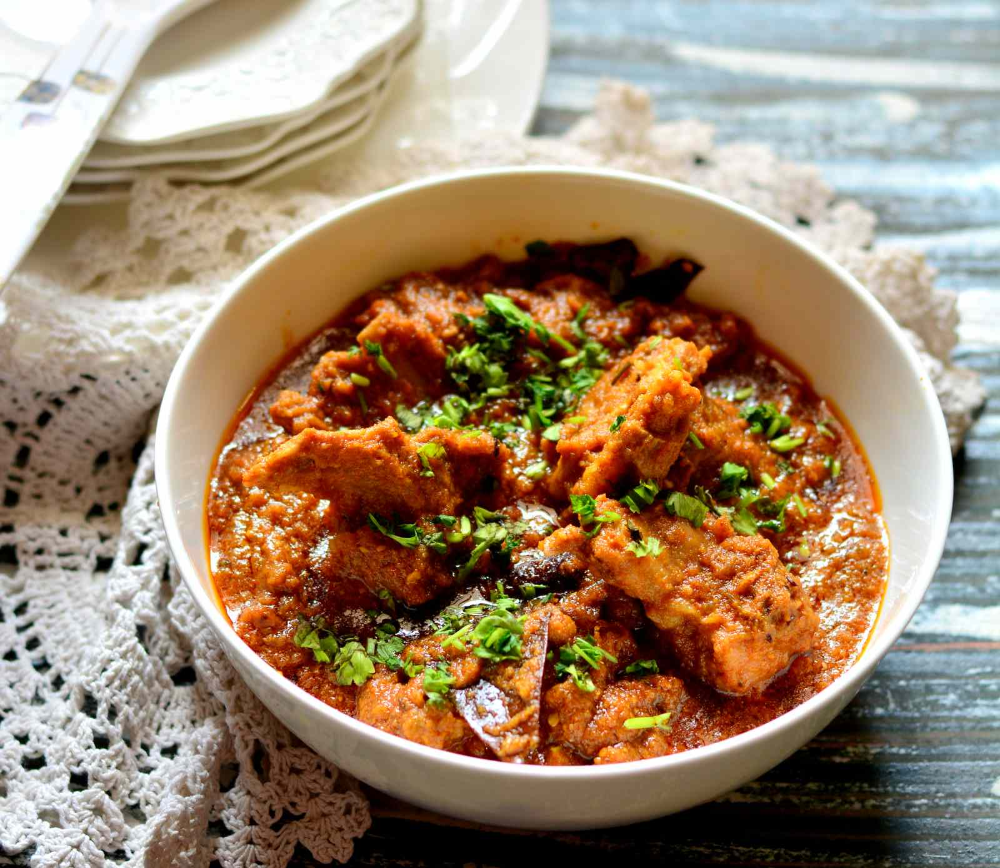

Kashmiri Lamb

Description
This Kashmiri curry is sweet and spicy and perfect for slow-cooking. A dark lamb curry with just the right balance of flavours - ideal for a low hassle dinner party. Best served with some basmati rice and a sprinkling of fresh coriander.
Ingredients
- 4 dried red chile peper
- 3 long green fresh chile peper
- 1 tablespoon cumin seeds
- 1 tablespoon Kashmiri garam masala
- 1 piece fresh ginger root, grated
- 5 cloves garlic, crushed
- 0.25 cup dried unsweetened coconut
- 3 tomatoes, chopped
- 6 tablespoons vegetable oil
- 2 large oinions, thinly sliced
- 2 pound lamb meat, cut into small cubes
- salt to taste
- 0.5 tablespoon ground turmeric
- 1 cup plain yogurt
- 1 pinch of saffron threads
- 0.25 cup of chopped cilantro
Steps
- Place red chiles, green chiles, cumin seeds, garam masala, ginger, garlic, grated coconut, and tomatoes into a blender; pulse several times to chop, then blend into a smooth paste.
- Heat vegetable oil in a large skillet or Dutch oven over medium heat. Stir in onion; cook and stir until the onion has softened and turned translucent, about 5 minutes. Reduce heat to medium-low, and continue cooking and stirring until the onion is very tender and golden brown, 10 to 15 minutes more.
- Stir the spice paste into the onion and cook and stir until the oil separates from the mixture, about 3 minutes.
- Stir in lamb pieces and salt. Cook, stirring frequently over medium-high heat, until the lamb pieces are browned on all sides, about 8 minutes.
- Mix in yogurt, saffron, and blanched almonds until well combined.
- Reduce the heat to low and simmer, covered, until the meat is tender and the gravy is thick, about 1 hour.
- Garnish the curry with chopped cilantro before serving.